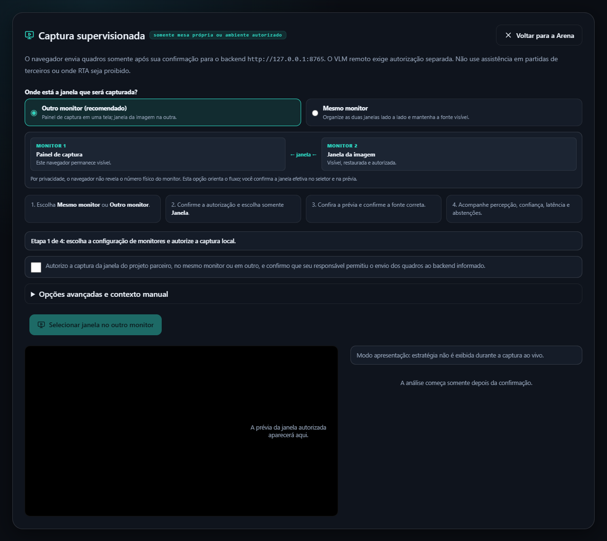
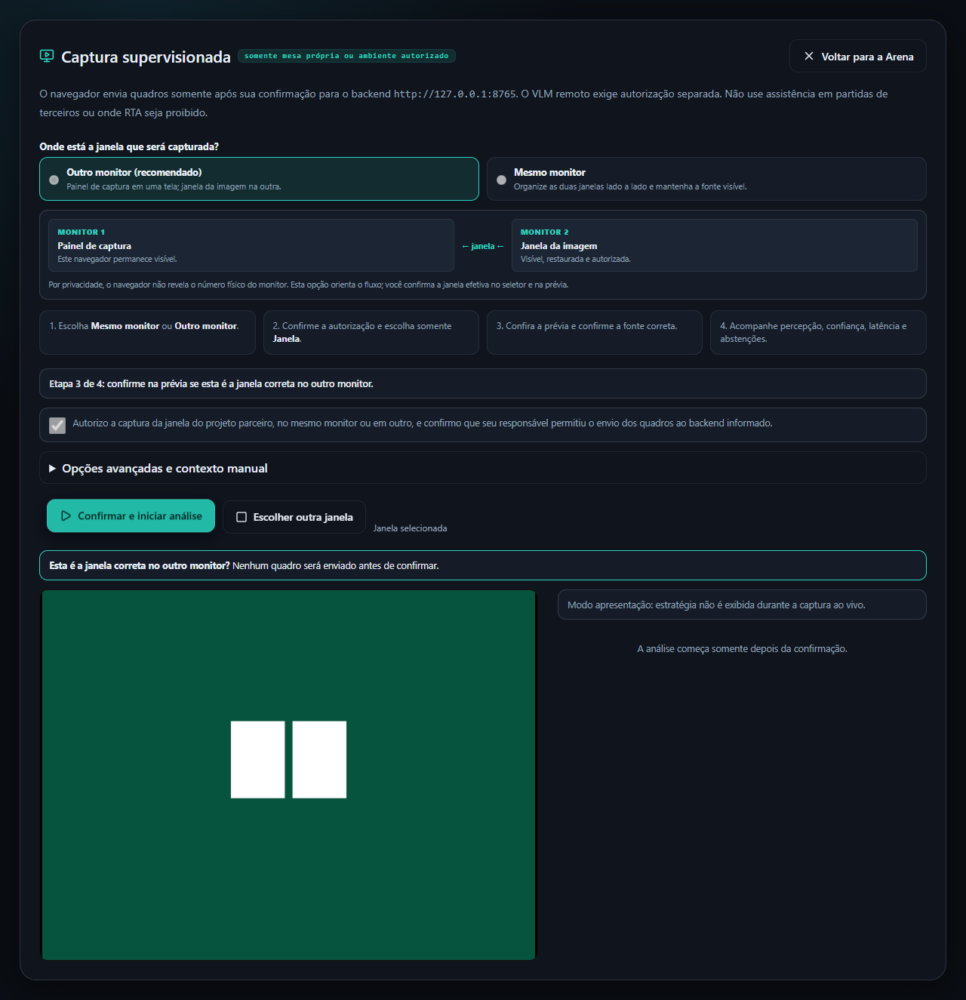
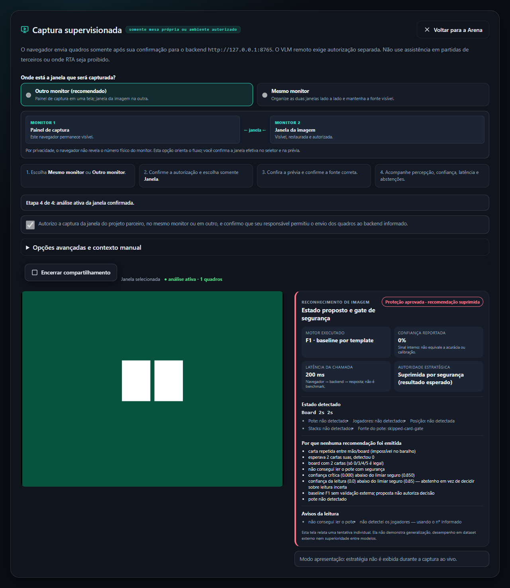
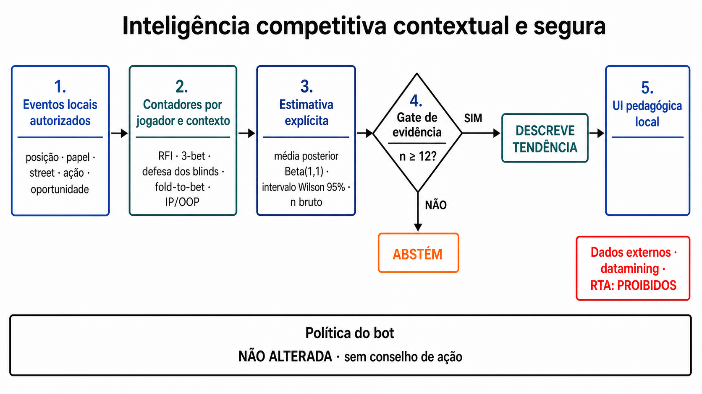

Operação segura do workspace de captura supervisionada, interpretação dos resultados e roteiro de apresentação.
Fluxo principal: configurar monitores → autorizar → selecionar janela → confirmar prévia → analisar.
Princípio: nenhum quadro é enviado antes da confirmação explícita.
Modo acadêmico: percepção, confiança interna, latência e abstenção; estratégia não é exibida ao vivo.
Além da visão: Copiloto de spot com recomendação e perfil competitivo local com incerteza explícita.
O launcher abre diretamente um workspace de página inteira. A tela inicial da Arena não fica escondida acima ou atrás da captura.
Dê duplo clique em POKER.bat e escolha [1] Iniciar. Backend, frontend e navegador são iniciados juntos.
No menu do POKER.bat, use [3] Mostrar URLs e abrir no navegador ou acesse http://127.0.0.1:5173/?view=capture.
http://127.0.0.1:8000/ready deve responder. A documentação interativa está em /docs.
Use [2] Parar no launcher. Isso encerra somente os processos registrados do Poker Arena.

Tela inicial real do workspace. O botão de seleção permanece desabilitado até o consentimento.
Deixe o painel no monitor 1 e a janela da imagem visível e restaurada no monitor 2.
Organize painel e janela autorizada lado a lado, sem minimizar nem sobrepor a fonte.
Leia o texto e marque a caixa somente se o responsável pelo projeto parceiro autorizou a captura e o envio ao backend informado.
Clique no botão correspondente ao modo escolhido. No seletor, abra a categoria Janela e escolha a aplicação correta.

A fonte já foi selecionada, mas a análise ainda não começou. Nenhum quadro é enviado nesta etapa.
Confirme que a prévia contém apenas a solução autorizada e clique em Confirmar e iniciar análise.
Clique em Escolher outra janela. A track atual é encerrada e a autorização local é preservada para nova tentativa.

Leitura real do backend a partir de uma fonte de vídeo controlada. O gate pode abster-se quando a evidência é insuficiente.
| Campo | Interpretação correta |
|---|---|
| Motor | Caminho de visão que produziu a tentativa, como F1, F2 ou F3. |
| Estado detectado | Proposta para aquela imagem: cartas, pote, jogadores, posição e stacks. |
| Confiança interna | Sinal interno da tentativa; não é acurácia nem probabilidade científica de acerto. |
| Latência | Tempo observado naquela chamada navegador → backend → resposta; não é benchmark isoladamente. |
| Proteção aprovada · recomendação suprimida | O controle de segurança funcionou como esperado e não produziu recomendação quando os requisitos de sanidade não foram satisfeitos. |
Remova ?view=capture da URL ou clique em Voltar para a Arena. Configure nível, quantidade de bots e modo jogador/laboratório.
Acesse /?view=copilot. O spot descrito recebe ação sugerida, opções e justificativas; PHH revisa a mão concluída; imagem depende do gate visual.
Gerencie participantes, acompanhe ações e abra os painéis laterais. A captura também pode ser aberta pelo botão Captura.
Consulte partidas, mãos, paginação e evidências registradas. Use esta área para rastreabilidade pós-sessão.
O guia explica BTN, blinds e demais posições. Serve como apoio pedagógico, não como resultado do reconhecimento.
Apresenta os componentes do motor e os limites de interpretação. No Laboratório, abra também o perfil de inteligência contextual.
Expanda Opções avançadas e contexto manual para configurar intervalo, valor a pagar, stack, número de oponentes e posição. Durante a análise esses campos são bloqueados, impedindo alterações silenciosas entre quadros.
No formulário de spot, informe cartas, board, pote, valor a pagar, stack, oponentes e posição. O backend sugere fold/check/call/raise/all-in, alvo de raise quando aplicável, equity, pot odds, opções e limites.
O histórico representa a mão completa e permite comparar cada decisão com a recomendação calculada. Esta modalidade é pós-mão.

RFI, limp, isolamento, 3-bet, squeeze, 4-bet, steal/defesa, blind-versus-blind e agressão IP/OOP mantêm numerador e denominador. Antes de 12 oportunidades, o painel se abstém; 12–29 é emergente e 30+ é estável.
| Sintoma | Ação recomendada |
|---|---|
| Botão desabilitado | Marque a autorização local. Sem ela, o navegador não é acionado. |
| Fonte bloqueada por privacidade | Encerre e selecione a categoria Janela, não tela inteira nem guia. |
| Permissão negada | Verifique as permissões de compartilhamento do navegador e tente novamente. |
| Prévia preta ou congelada | Restaure a janela parceira, mantenha-a visível no monitor escolhido e confirme que ela continua produzindo frames. Conteúdo protegido pode permanecer preto. |
| Janela no monitor incorreto | Encerre a seleção, mova a janela com Win + Shift + ←/→, mantenha-a restaurada e selecione-a novamente. |
| Proteção aprovada | Leia por que nenhuma recomendação foi emitida. Melhore visibilidade, escala e ausência de oclusões; não force uma conclusão. |
| Última leitura desatualizada | O backend falhou temporariamente. A interface preserva a última evidência e usa backoff antes de tentar novamente. |
| Backend indisponível | Abra http://127.0.0.1:8000/ready. Se necessário, use Parar e Iniciar no POKER.bat. |
| Compartilhamento encerrado | O navegador ou o usuário terminou a track. Selecione novamente a janela autorizada. |
POKER.bat e confirme backend e frontend.“Este é um laboratório supervisionado: captura uma janela autorizada, propõe um estado visual e se abstém quando a evidência não é suficiente.”
0–15 s: mostre a autorização e a seleção restrita a uma janela.
15–30 s: destaque a prévia e a garantia de zero envio antes da confirmação.
30–50 s: inicie a análise e interprete o diagnóstico com linguagem científica adequada.
50–60 s: encerre o compartilhamento e mostre que a sessão foi finalizada.